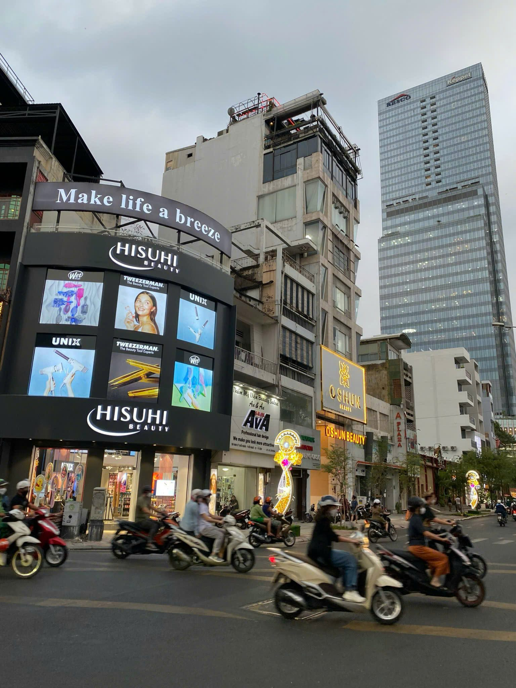
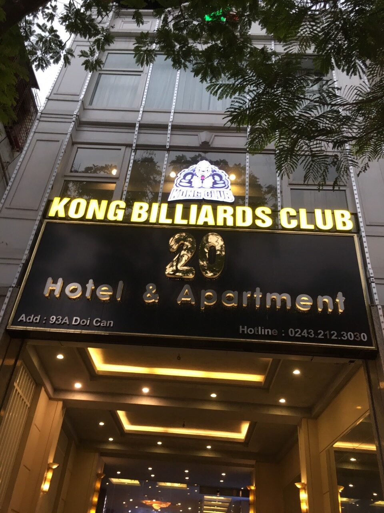
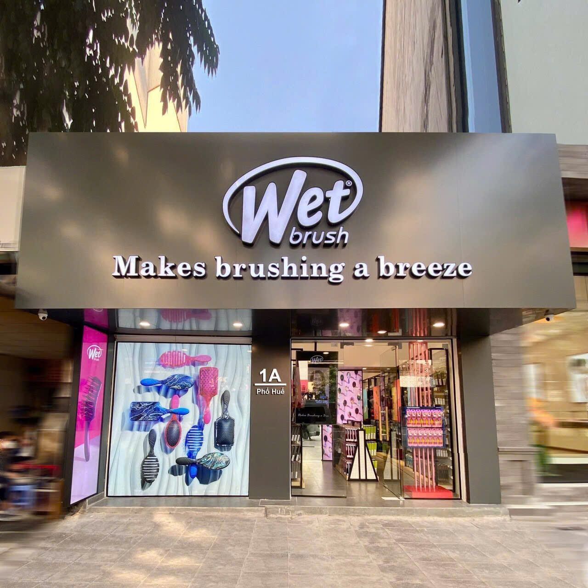
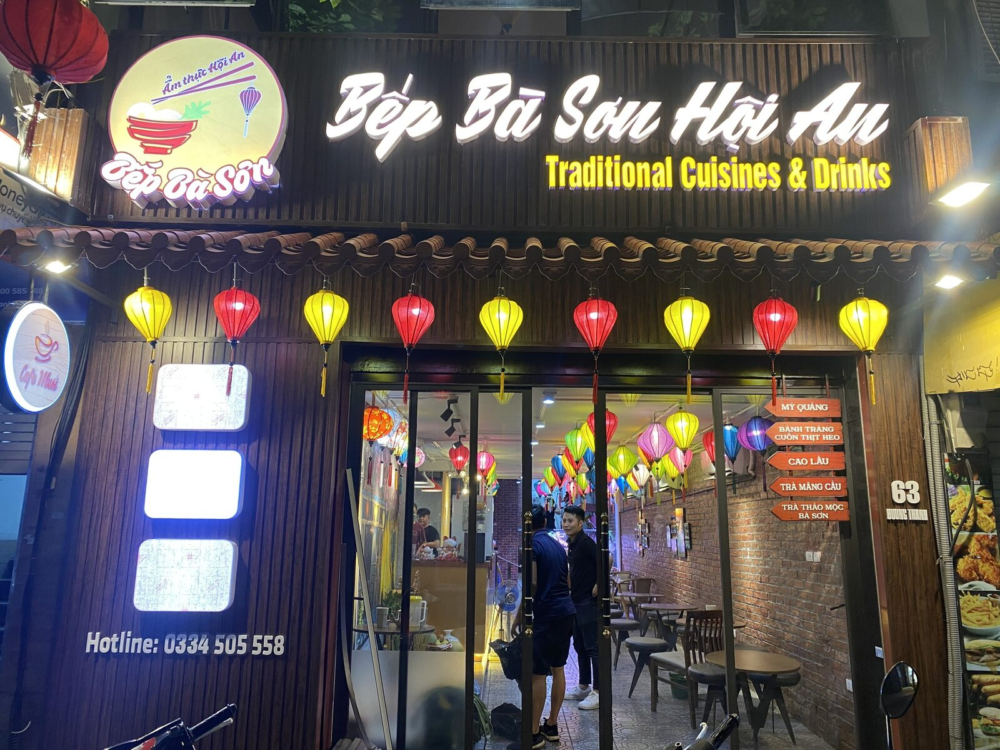

Gửi ảnh trước để biết nên sửa hay thay mới
Không phải biển cũ nào cũng nên làm lại từ đầu. Nếu khung còn chắc, bố cục còn dùng được và chỉ hỏng mặt bạt, LED hoặc nguồn, sửa đúng hạng mục sẽ tiết kiệm hơn. Nếu biển đã xuống cấp toàn bộ, tôi sẽ nói rõ để tránh mất tiền sửa nhiều lần.
Hạng mục sửa chữa biển quảng cáo thường gặp
| Hạng mục | Báo giá | Ghi chú |
|---|---|---|
| Thay mặt bạt Hiflex biển cũ | Liên hệ theo kích thước | Phù hợp biển bạc màu, rách bạt, sai nội dung hoặc cần đổi thương hiệu. |
| Thay LED, thay nguồn hộp đèn | Liên hệ theo hiện trạng | Cần kiểm tra loại LED, nguồn, dây điện, độ thấm nước và vị trí treo. |
| Sửa biển hộp đèn không sáng đều | Liên hệ sau khi xem ảnh | Thường do chết LED, yếu nguồn, hở nước hoặc mặt biển xuống cấp. |
| Gia cố khung, bắt lại biển lung lay | Liên hệ theo độ cao | Ưu tiên xử lý sớm với biển ngoài trời, mặt phố, vị trí có gió mạnh. |
| Thay chữ nổi mica/inox hỏng | Liên hệ theo mẫu chữ | Tính theo chiều cao chữ, vật liệu, LED hắt sáng và độ phức tạp logo. |
| Vệ sinh, chỉnh sáng, bảo trì biển | Liên hệ theo hạng mục | Phù hợp biển còn dùng tốt nhưng bị bẩn, sáng yếu hoặc xuống màu nhẹ. |
Dấu hiệu nên sửa biển ngay
- Biển sáng chập chờn, lúc sáng lúc tắt hoặc chỉ sáng một phần.
- Mặt bạt bạc màu, rách, bong mép, nội dung cũ không còn đúng.
- Chữ nổi bị nứt, rơi, hở keo, LED hắt sáng yếu hoặc mất nét.
- Hộp đèn bị nước vào, loang sáng, mặt mica/bạt bị ố.
- Khung biển rung, han gỉ, vít bắt yếu hoặc có nguy cơ rơi khi mưa gió.
- Biển cũ làm giảm cảm giác chuyên nghiệp của cửa hàng dù vị trí kinh doanh vẫn tốt.
Quy trình xử lý nhanh
- Khách gửi ảnh toàn cảnh biển, ảnh cận lỗi và vị trí lắp đặt qua Zalo.
- Bông Sen Trắng kiểm tra sơ bộ: lỗi điện, lỗi mặt biển, lỗi chữ nổi hay lỗi kết cấu.
- Tư vấn phương án sửa tiết kiệm hoặc thay mới nếu sửa không còn hợp lý.
- Chốt vật tư, thời gian thi công và phương án an toàn nếu biển cao hoặc mặt phố đông.
- Thi công, kiểm tra ánh sáng/kết cấu và bàn giao sau khi hoàn thiện.
Khi nào nên sửa, khi nào nên làm mới?
Ảnh tham khảo biển có LED, mặt tiền, hộp đèn





Khu vực nhận sửa biển tại Hà Nội
Ưu tiên nội thành và các khu vực lân cận: Đống Đa, Ba Đình, Hoàn Kiếm, Hai Bà Trưng, Cầu Giấy, Thanh Xuân, Tây Hồ, Hoàng Mai, Long Biên, Nam Từ Liêm, Bắc Từ Liêm, Hà Đông. Với hạng mục gấp, gửi ảnh trước để kiểm tra khả năng xử lý trong ngày.
Câu hỏi thường gặp
Sửa biển quảng cáo cũ có rẻ hơn làm mới không?
Thường rẻ hơn nếu khung còn chắc, kích thước phù hợp và hệ điện chưa hỏng nặng. Nếu khung han gỉ, thấm nước nhiều hoặc bố cục cũ không còn phù hợp, nên cân nhắc làm mới để tránh sửa đi sửa lại.
Cần gửi gì để báo giá sửa biển nhanh?
Anh/chị gửi ảnh toàn cảnh biển, ảnh cận phần hỏng, kích thước ước lượng, địa chỉ lắp đặt và mô tả lỗi: không sáng, rách bạt, bong chữ, hỏng nguồn, rung khung hoặc cần thay nội dung.
Có nhận sửa biển gấp tại Hà Nội không?
Có thể nhận hạng mục gấp nếu lỗi rõ, vật tư sẵn và vị trí thi công không quá phức tạp. Với biển cao, biển lớn hoặc cần tháo lắp nhiều, nên khảo sát trước để đảm bảo an toàn.
Khi nào không nên sửa mà nên làm biển mới?
Nên làm mới khi khung yếu, mặt biển quá cũ, hệ LED hỏng nhiều điểm, thương hiệu đã đổi nhận diện hoặc chi phí sửa gần bằng chi phí làm mới một phương án bền hơn.